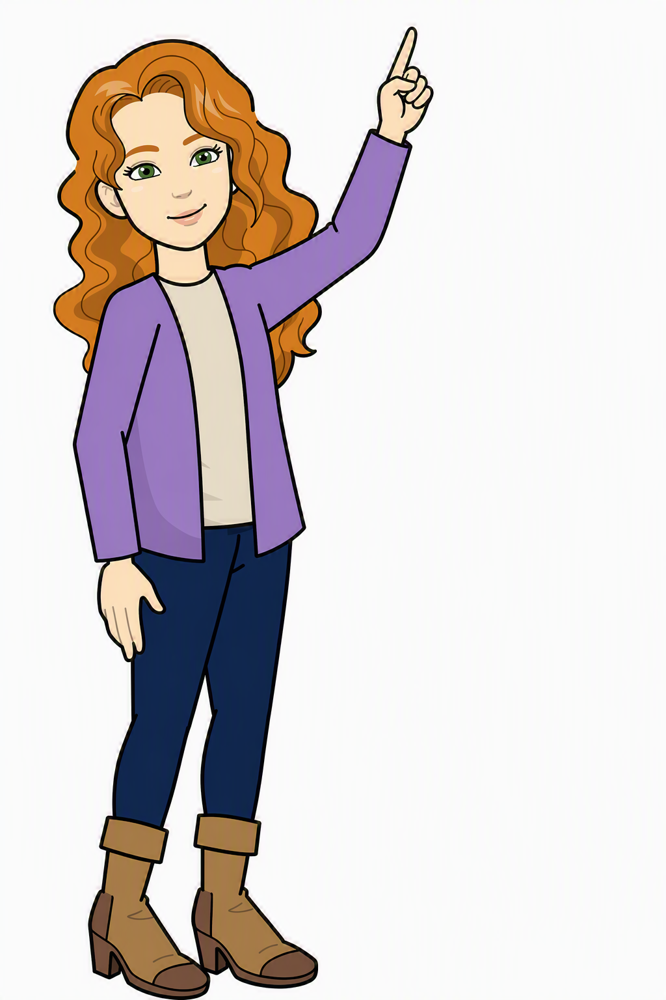

Sending Informtion (The CHARMS Portal)
Sending information via the CHARMS portal

Return to this Browser Tab when you have finished watching the video.
Then answer the question below.
When you are ready, click "Next Page".
Then answer the question below.
When you are ready, click "Next Page".
Send the Progress Action, without the attachment to Nick Crabbe.
Question:
Where would you click first if you wished to just send the attached document
without the Progress information?